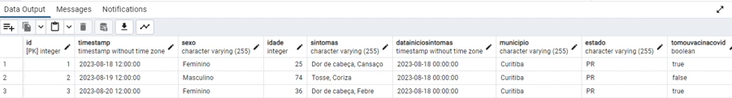

Flask CRUD API + Docker
Overview
This project implements a Flask-based CRUD API for managing patient data with flu symptoms. The API operations include creating, reading, updating, and deleting patient records. The application uses Docker for containerization, enabling easy deployment. Here's the code on GitHub.
Key Features
Local Database
- The program establishes a connection to a local PostgreSQL database.
- It creates a table named
dados_gripeto store patient information, including timestamp, gender, age, symptoms, and vaccination status.
API Operations:
- Endpoint:
/pacientes - Method: GET
- Response:
Retrieves a list of all patients. - Endpoint:
/paciente - Method: POST
- Request Body Format:
{ "timestamp": "YYYY-MM-DD HH:MM:SS", "sexo": "Gender", "idade": 99, "sintomas": "Symptoms", "dataInicioSintomas": "YYYY-MM-DD HH:MM:SS", "municipio": "City", "estado": "State", "tomouVacinaCovid": true } - Response:
200 OK - Patient created successfully. - Endpoint:
/paciente/{id} - Method: PUT
- URL Parameters: id - Patient ID
- Request Body Format:
{ "timestamp": "YYYY-MM-DD HH:MM:SS", "sexo": "Gender", "idade": 0, "sintomas": "Symptoms", "dataInicioSintomas": "YYYY-MM-DD HH:MM:SS", "municipio": "City", "estado": "State", "tomouVacinaCovid": true } - Responses:
200 OK - Patient updated successfully.
404 Not Found - Patient with the specified ID not found. - Endpoint:
/paciente/{id} - Method: DELETE
- URL Parameters: id - Patient ID
- Responses:
200 OK - Patient removed successfully.
404 Not Found - Patient with the specified ID not found.
List Patients:
Create Patient:
Update Patient:
Remove Patient:
Technologies Used
- Flask: The lightweight Python web framework used for building the API.
- PostgreSQL: The database management system for storing patient records.
- Psycopg2: A PostgreSQL adapter for Python, facilitating database connections.
- Docker: Enables containerization for easy deployment and management.
After following the steps required to connect with the container (available on the project's GitHub page), you should see the Flask server running on your terminal as the image below shows.
The API allows for the creation of multiple entries as shown below:
The Python script connects to a PostgreSQL database instance and inserts the data from the request into the table using parameterized queries, ensuring data integrity.
The API also allows for all the data in the table to be listed.
As well as the rest of the standard CRUD functions, such as update and delete. It also returns error messages if there's no such patient with the provided ID.